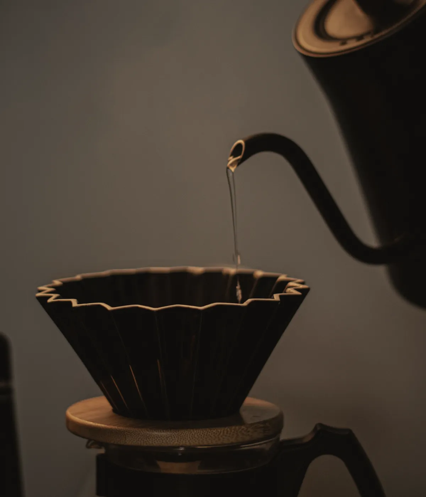
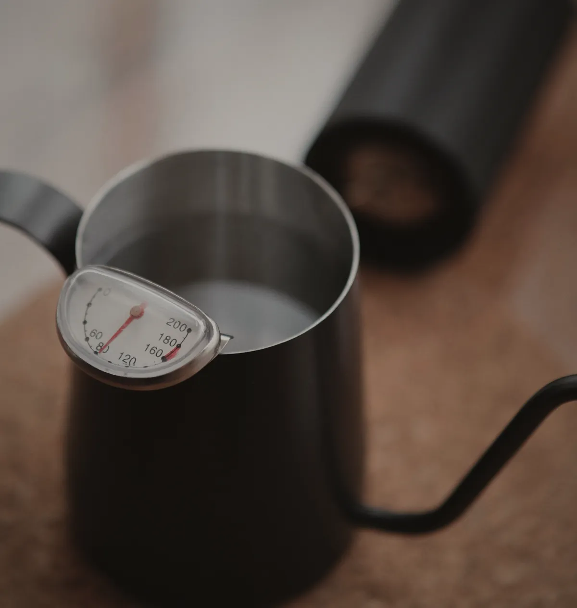
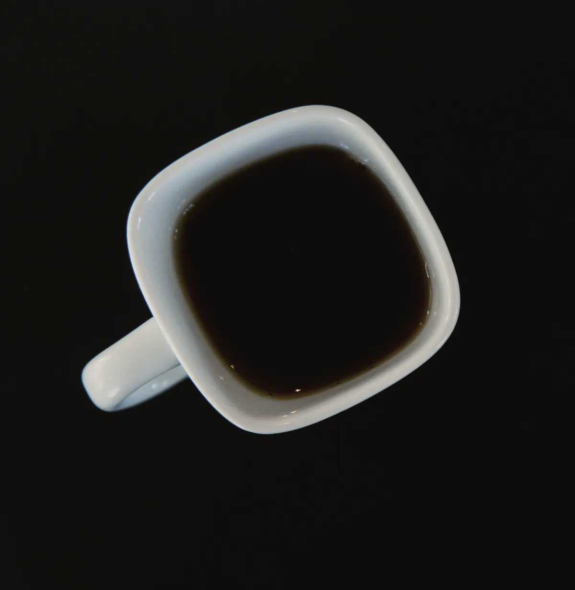

The only thing we sell
The bag.
Roasted on the next Monday, posted on Tuesday, and at its best for the month after that.
A$26 250 g, whole bean
Hold one in the next roast
What is in it
250 grams, whole bean, one coffee.
Washed Caturra from Aurora Tique’s ridge above Gaitania, roasted light for filter. Enough for 16 cups at our recipe below, which is about a fortnight for one person or a week for two.
There is no subscription. Order when you are down to the last few days, and this page tells you which Monday it will be roasted on.
- Coffee
- Alto de las Guacharacas, Lot 03
- Tastes of
- Red grape, panela, orange peel; black-tea finish
- Bag
- 250 g, valve bag, roast date and batch stamped by hand
- Best
- Day 4 to day 30 after roast
How we brew it
Fifteen grams, and wait for the dome.
The same recipe we use for the Monday measurements, just carried on past the bloom. A flat-bottomed dripper, medium grind, water just off the boil.

- 0:0045 g of water in a slow spiral, centre outwards. Watch it rise.
- 0:40Up to 150 g, pouring in the middle, once the dome starts to crack.
- 1:15Up to 250 g, same again. Give the dripper one gentle swirl.
- 2:45Done. If it runs past 3:15, grind a little coarser next time.


Asked most
Questions.
Why only one coffee?
Because every other coffee we stocked was always a week older than it should have been. One coffee roasted weekly means nothing ever sits on the shelf past its Monday.
Why no subscription?
A subscription ships on our schedule, not yours, and the bag you have not opened yet goes on ageing. Order when you are nearly out; the page always shows the next roast date and when it will reach you.
Can you grind it for me?
No, and not to be difficult: ground coffee loses most of its gas within the hour. A bag we ground on Monday would bloom on Thursday like the stale dripper on the home page.
What happens when the lot runs out?
Lot 03 lasts 49 Mondays. Four weeks before the last one we will put the next lot on the lot page: the farm, the process and the first Monday it will be roasted.
Where do you post to?
Anywhere in Australia, by Express Post on Tuesday. Most of Melbourne has it on Wednesday; most capital cities on Thursday.